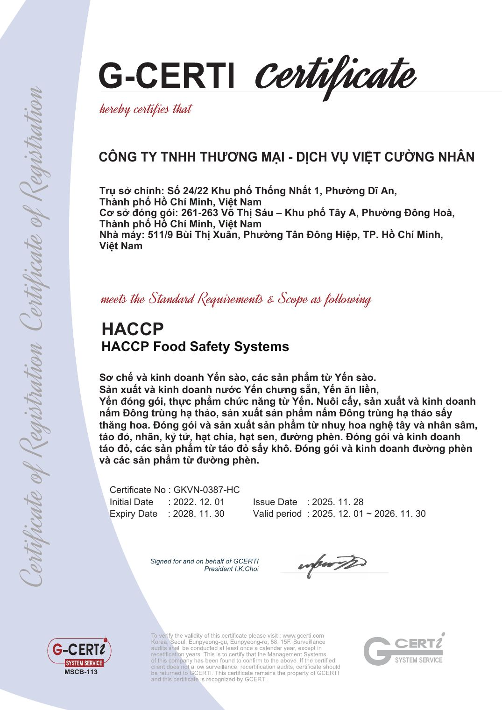
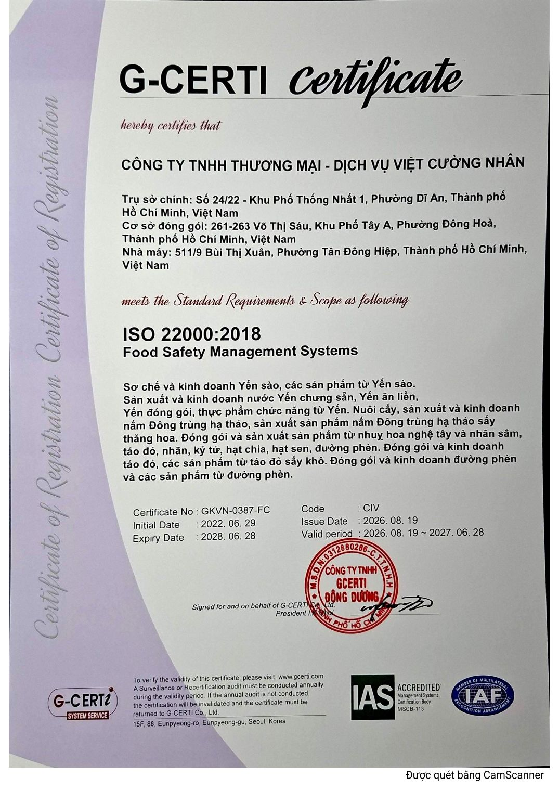
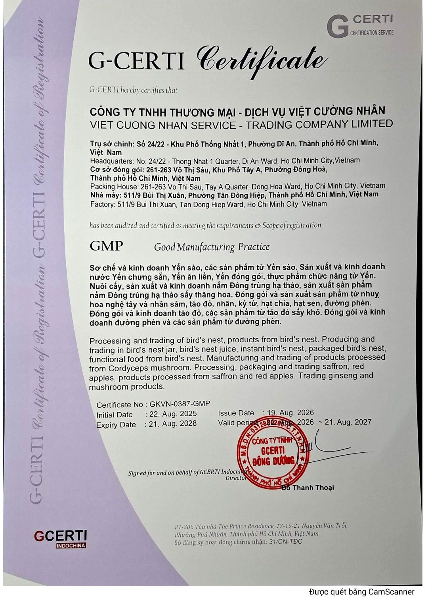
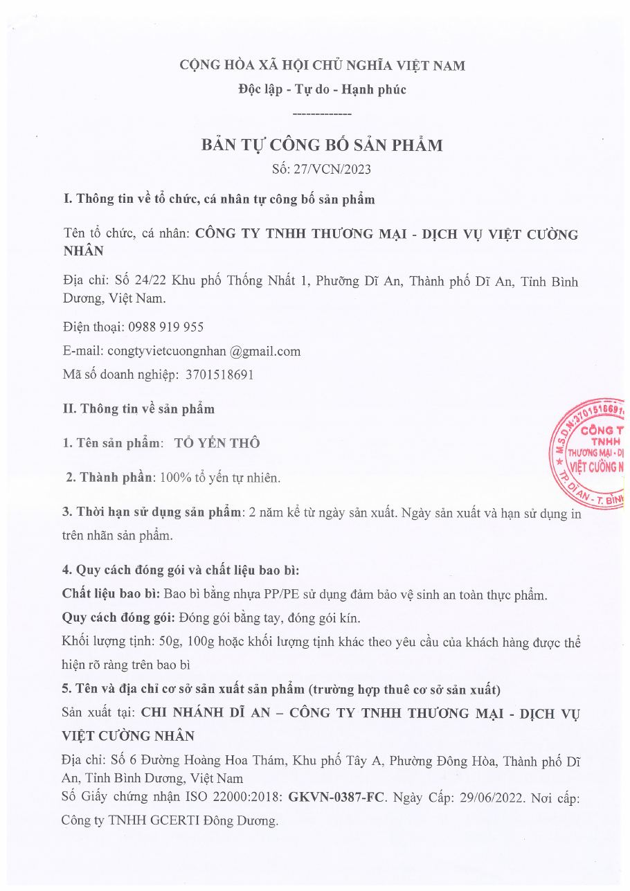
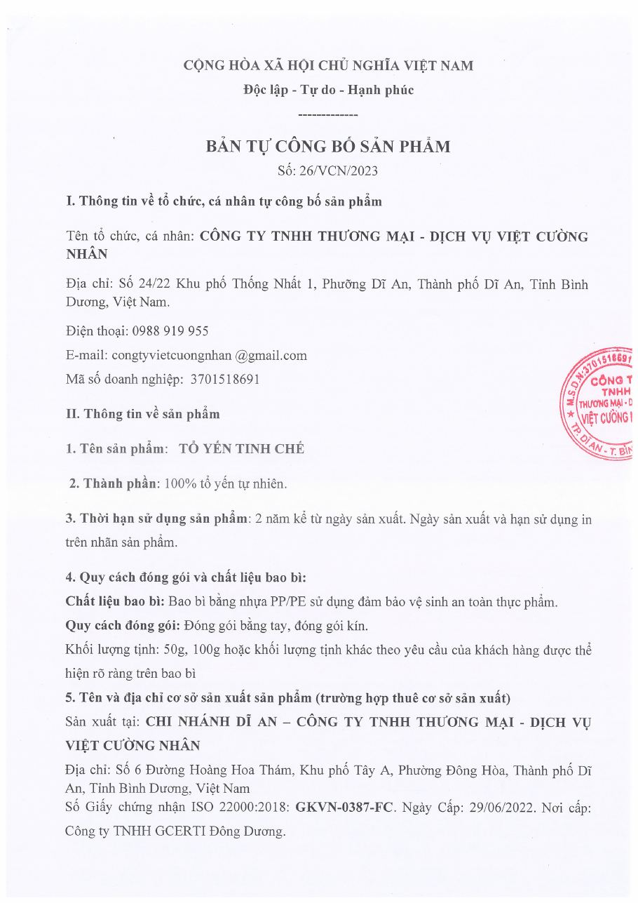
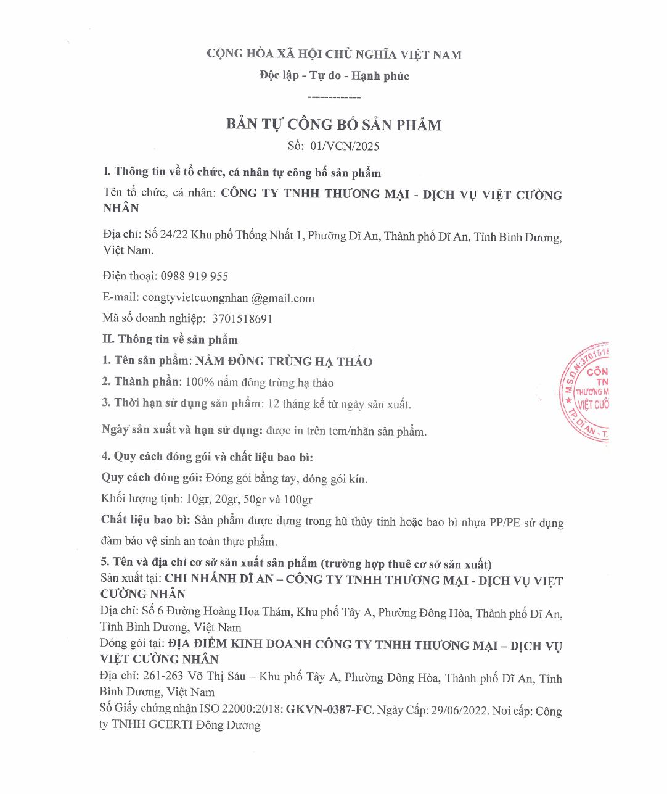

<section class="block" id="cam-ket">
  <div class="wrap">
    <div class="head"><div><div class="eyebrow">Vì sao chọn Việt Cường Nhân</div><h1 style="font-size:clamp(32px,5.5vw,48px);color:var(--emerald-2)">Chứng nhận &amp; Cam kết</h1></div></div>
    <div class="trust">
      <div><h3>Tự sản xuất</h3><p>Yến sào, nước yến chưng và nấm đông trùng hạ thảo do Việt Cường Nhân sơ chế, sản xuất tại cơ sở đóng gói Võ Thị Sáu và nhà máy Bùi Thị Xuân, TP.HCM.</p></div>
      <div><h3>HACCP · ISO 22000 · GMP</h3><p>Hệ thống quản lý an toàn thực phẩm đạt HACCP, ISO 22000:2018 và GMP (G-CERTI). Sản phẩm yến và đông trùng hạ thảo có bản tự công bố. <a href="#ho-so">Xem giấy tờ</a></p></div>
      <div><h3>Tư vấn cách dùng</h3><p>Hướng dẫn ngâm, chưng và bảo quản cho từng loại yến. Gọi hoặc nhắn Zalo 0978 094 739.</p></div>
    </div>
    <div class="docs" id="ho-so">
      <h3>Chứng nhận &amp; hồ sơ công bố</h3>
      <p style="margin:0;color:var(--muted)">Phạm vi chứng nhận HACCP, ISO 22000 và GMP: sơ chế và kinh doanh yến sào, sản phẩm từ yến (yến chưng sẵn, nước yến, yến đóng gói); nuôi cấy, sản xuất nấm đông trùng hạ thảo; đóng gói nhụy hoa nghệ tây, táo đỏ; kinh doanh nhân sâm. Bấm vào giấy để xem rõ.</p>
      <div class="grid-d"><button type="button" data-doc="haccp"><span>HACCP (hiệu lực đến 30/11/2026)</span></button><button type="button" data-doc="iso"><span>ISO 22000:2018 (hiệu lực đến 28/06/2027)</span></button><button type="button" data-doc="gmp"><span>GMP (hiệu lực đến 21/08/2027)</span></button><button type="button" data-doc="yen-tho"><span>Tự công bố: Tổ yến thô</span></button><button type="button" data-doc="yen-tinh-che"><span>Tự công bố: Tổ yến tinh chế</span></button><button type="button" data-doc="dong-trung"><span>Tự công bố: Nấm đông trùng hạ thảo</span></button></div>
    </div>
  </div>
</section>
